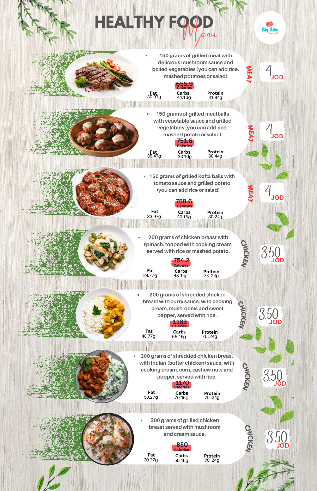

Our Menu
-
.png)
salad menu
salad menu : Our salad menu offers a variety of fresh and healthy options to suit any taste. From our classic Caesar salad with crisp romaine lettuce, homemade croutons, and tangy dressing, to our Southwest salad with black beans, corn, and avocado, we've got something for everyone. For those who prefer a lighter option, our mixed greens salad is the perfect choice, featuring a variety of fresh seasonal greens and a light vinaigrette dressing.
-

main menu
Our healthy food menu is designed with your well-being in mind. We believe that eating nutritious and wholesome food shouldn't mean sacrificing flavor, so we've created a menu that's both healthy and delicious. Our menu features a variety of options to suit any taste, from our protein-packed quinoa bowls to our colorful and flavorful salads. All of our dishes are made with fresh and locally sourced ingredients, and we use healthy cooking techniques such as grilling, roasting, and steaming to ensure that our food is both tasty and nutritious.
About Us
At our healthy food business, we believe that healthy eating should be both delicious and convenient. That's why we offer a variety of nutritious options that are made with fresh, high-quality ingredients and are designed to keep you feeling energized and satisfied throughout the day. From our signature smoothie bowls, packed with antioxidants and superfoods, to our hearty grain bowls, loaded with protein and fiber, we're committed to providing our customers with healthy and delicious meals that they can feel good about eating. Whether you're looking for a quick grab-and-go option or a leisurely sit-down meal, our friendly staff and cozy atmosphere will make you feel right at home. So come on in and experience the delicious and nutritious options that our healthy food business has to offer!
Contact Us
You can contact us at:
- Address: jordan-amman
- Phone: 0796943582
- Email: BIGbite@faisalfood.com